Colonial Period and Independence Test questions 73–89
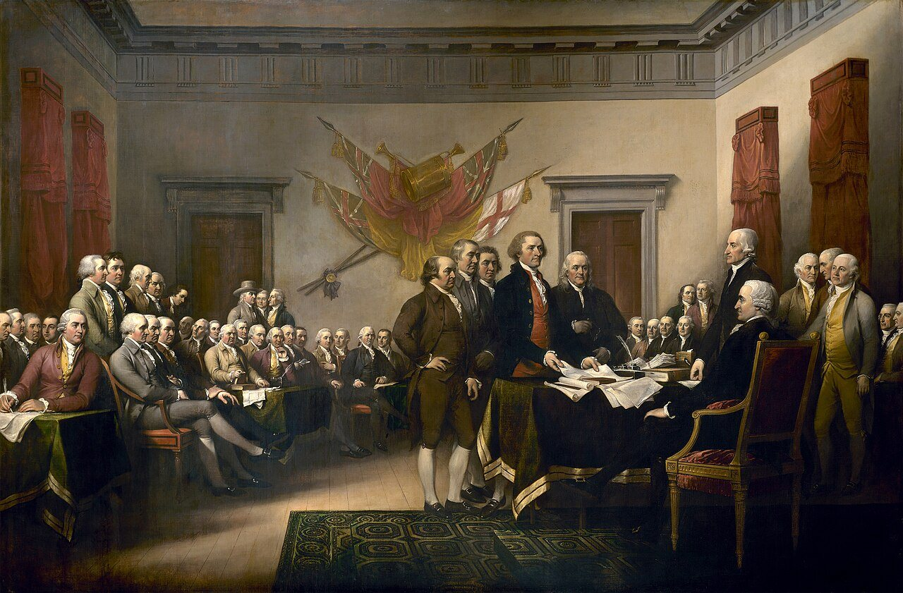
17 questions, one big story
Today we follow how 13 colonies became one country. Then you crack the case in The 1776 Files.
17
test questions today
3
★ starred questions to know cold
33
Thomas Jefferson’s age when he wrote the Declaration
Iowa civics test: 128 questions · pass with 60% · no time limit · retakes allowed
Today: 17 questions, 5 big ideas
1
Who was here, who came, who was forced here
Q73 · Q74★ · Q75
2
Why the colonists broke up with Britain
Q76 · Q77 · Q80
3
The breakup letter: July 4, 1776
Q78★ · Q79 · Q81
4
A brand-new plan in 1787
Q82 · Q83 · Q84
5
The Founders file
Q85 · Q86★ · Q87 · Q88 · Q89
★ = one of the most important questions on the official list · Iowa standards: Gov.3 (founding documents) · Gov.15 (exemplary Americans)
BIG IDEA 1 · WHO WAS HERE FIRST
People already lived here
TEST QUESTION 74 ★
Who lived in America before the Europeans arrived?
American Indians
Native Americans
Either one counts.
WAIT, THAT’S REAL? · IOWA
Native people built more than 200 mounds in northeast Iowa, some shaped like bears and birds. They are 800 to 1,400 years old.
Native nations are still here: the Meskwaki Nation governs its own land in Tama County, about an hour from Marion.
The 1776 Files · Iowa Civics Test, Friday 4
BIG IDEA 1 · WHY THEY CAME
Why did colonists come?
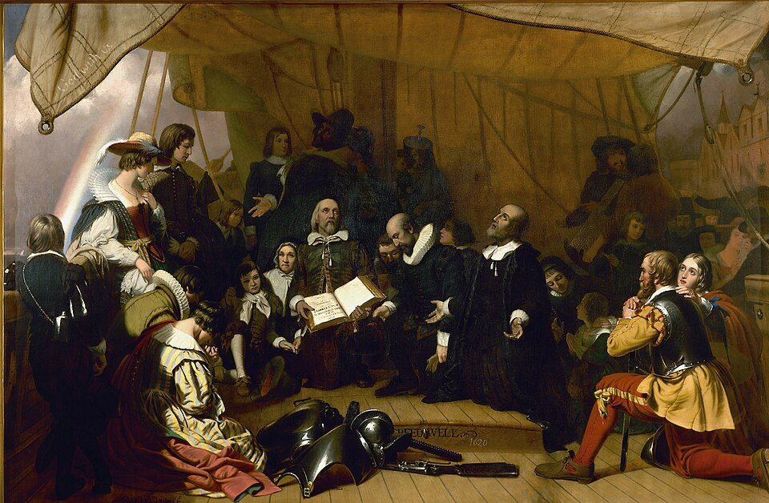
TEST QUESTION 73
The colonists came to America for many reasons. Name one.
Freedom
Political liberty (a say in government)
Religious freedom
Economic opportunity (land, jobs, money)
Escape persecution (being punished for your beliefs)
Easiest to remember: Freedom.
WAIT, THAT’S REAL?
Many poor Europeans couldn’t pay for the trip, so they agreed to work 4 to 7 years for no pay. They were called indentured servants.
The 1776 Files · Iowa Civics Test, Friday 4
BIG IDEA 1 · FORCED HERE
Not everyone came by choice
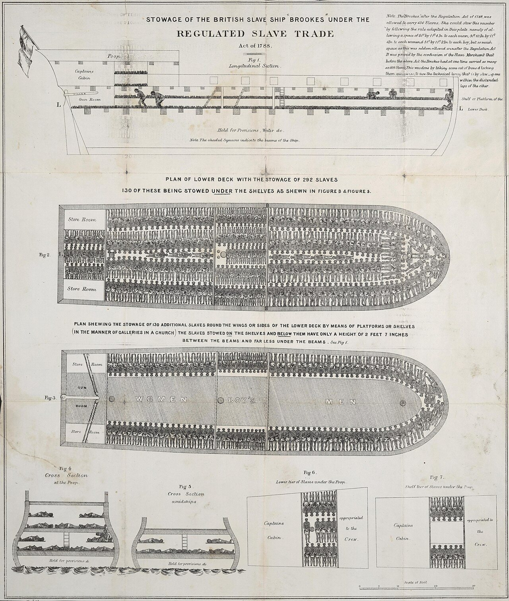
TEST QUESTION 75
What group of people was taken and sold as slaves?
Africans
Also accepted: People from Africa. Enslaved = forced to work for no pay and owned like property.
WHAT HAPPENED
1619: Africans brought in chains to the colony of Virginia.
1790: about 1 in 6 people in the U.S. was enslaved.
Enslaved people resisted and kept their families and cultures alive.
The poster (1788) was made by people fighting to END slavery. It shows how people were packed onto one ship.
BIG IDEA 2 · THE BREAKUP
Taxes without a say
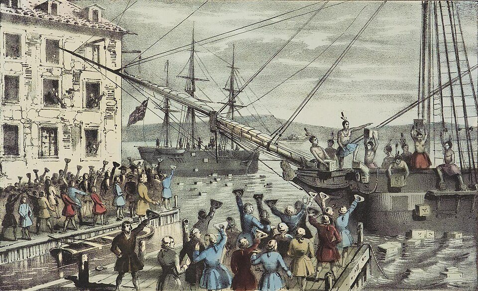
IMAGINE THIS
A government 3,000 miles away puts a tax on your phone plan. Nobody from Iowa gets a vote on it. You can’t vote them out.
That’s “taxation without representation.”
WAIT, THAT’S REAL?
Dec. 16, 1773: colonists dumped 342 chests of British tea into Boston Harbor, worth nearly $2 million today.
DEBATE
The Boston Tea Party: a protest, a crime, or both?
The 1776 Files · Iowa Civics Test, Friday 4
BIG IDEA 2 · TEST QUESTION 77
Name ONE reason they declared independence
Easiest to remember: taxation without representation (taxes, but no vote).
High taxes
Britain raised taxes to pay for its wars
Taxation without representation
Taxes, but no vote in Parliament
British soldiers stayed in Americans’ houses (boarding, quartering)
Colonists had to house and feed troops
They did not have self-government
A king and Parliament far away made the rules
Boston Massacre
1770: British soldiers shot and killed 5 colonists
Boston Tea Party (Tea Act)
1773: tea dumped in Boston Harbor
Stamp Act
1765: tax on paper, like newspapers and playing cards
Sugar Act
1764: tax on sugar and molasses
Townshend Acts
1767: taxes on glass, paint, paper, and tea
Intolerable (Coercive) Acts
1774: Britain’s punishment for the Tea Party
The 1776 Files · Iowa Civics Test, Friday 4
BIG IDEA 2 · THE WAR
The war for independence
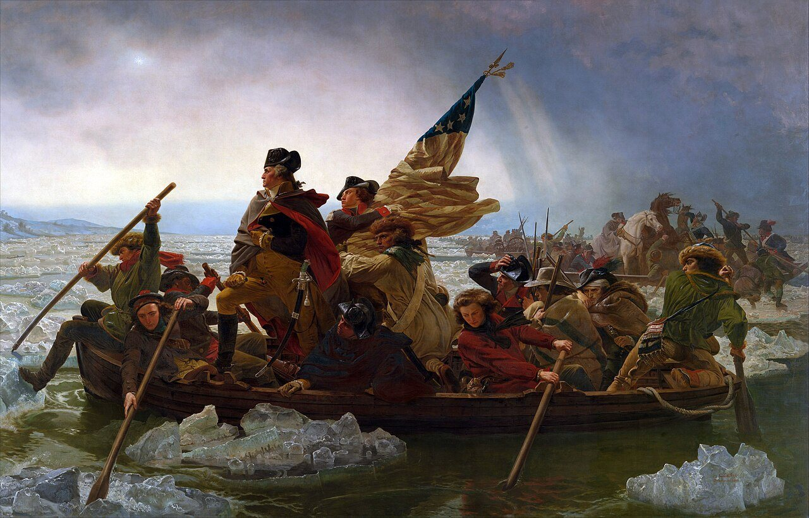
TEST QUESTION 76
What war did the Americans fight to win independence from Britain?
American Revolution
The (American) Revolutionary War
War for (American) Independence
All three are the same war: 1775–1783.
TEST QUESTION 80
The American Revolution had many important events. Name one.
(Battle of) Bunker Hill 1775
Declaration of Independence 1776
Washington Crossing the Delaware (Battle of Trenton) 1776
(Battle of) Saratoga 1777
Valley Forge (Encampment) 1777–78
(Battle of) Yorktown (British surrender at Yorktown) 1781
Smart pick: Declaration of Independence.
Wait, that’s real? The fighting started in 1775, more than a year BEFORE the Declaration.
Quick check: real reason or trap?
Hold up 1 finger = a real reason the colonists declared independence. 2 fingers = trap.
1
The Stamp Act
2
British soldiers staying in colonists’ houses
3
The Civil War
4
Taxation without representation
5
The Louisiana Purchase
Tip: if it happened in the 1800s, it can’t be a reason for 1776.
BIG IDEA 3 · THE BREAKUP LETTER
Who wrote it? When?
TEST QUESTION 78 ★
Who wrote the Declaration of Independence?
Thomas Jefferson
Official answer: (Thomas) Jefferson. He was 33.
TEST QUESTION 79
When was the Declaration of Independence adopted?
July 4, 1776
Adopted = officially approved by Congress.
Wait, that’s real? Congress voted for independence on July 2. John Adams thought July 2 would be the big holiday!
BIG IDEA 3 · THE BREAKUP LETTER
What did the letter say?
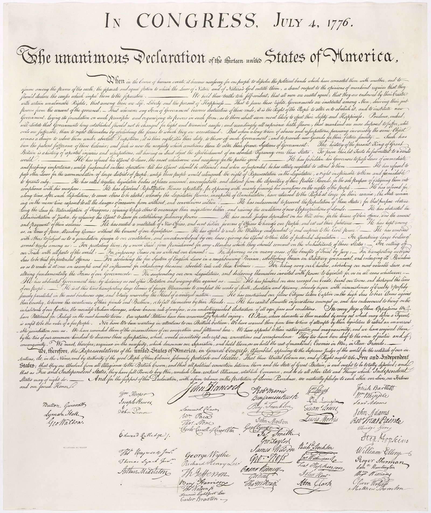
THE BIG IDEAS
“All men are created equal.”
People are born with rights: “Life, Liberty and the pursuit of Happiness.”
Government gets its power from the people.
A long list of complaints against King George III.
THE HARD TRUTH
These promises didn’t include everyone yet. Enslaved people, Native Americans, and women were left out. Jefferson himself enslaved more than 600 people during his life.
Wait, that’s real? On July 4, 2026, the Declaration turned 250 years old.
The 1776 Files · Iowa Civics Test, Friday 4
BIG IDEA 3 · 13 COLONIES → 13 STATES
Q81: Name five of the 13 states
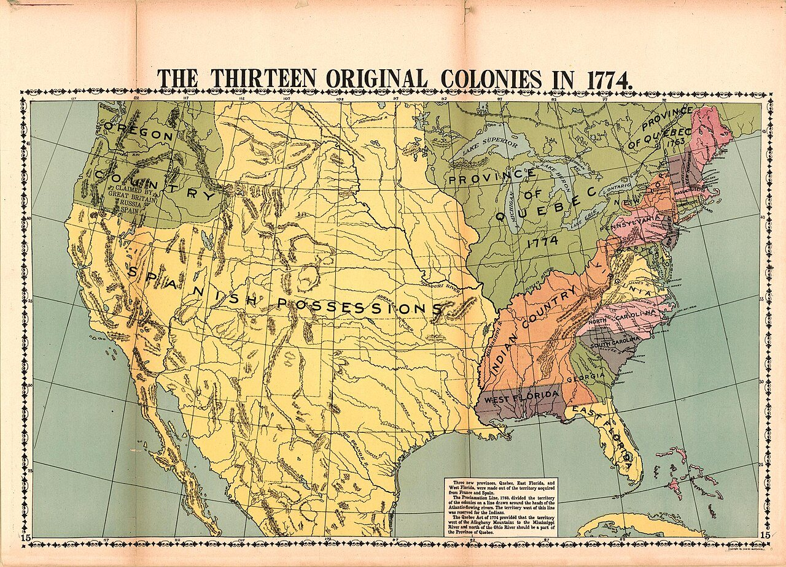
LEARN THESE FIVE
Virginia
New York
Pennsylvania
Massachusetts
Georgia
Need five? These are the easiest to remember.
THE OTHER EIGHT
New Hampshire
Rhode Island
Connecticut
New Jersey
Delaware
Maryland
North Carolina
South Carolina
Trap: Vermont, Maine, and Florida were NOT part of the 13. Iowa became the 29th state in 1846.
BIG IDEA 4 · A NEW PLAN
1787: a brand-new plan
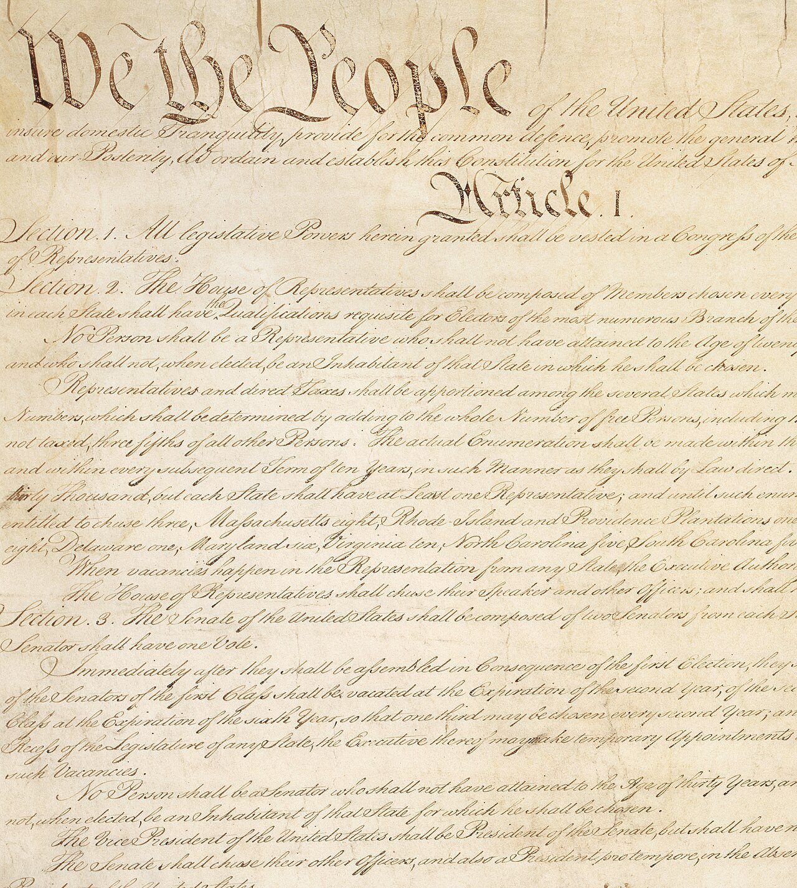
WHY A NEW PLAN?
The first plan, the Articles of Confederation (1781), was too weak.
Congress couldn’t collect taxes or pay the army.
So in 1787, leaders met in Philadelphia to write a new one.
TEST QUESTION 82
What founding document was written in 1787?
Constitution
Official answer: (U.S.) Constitution
Wait, that’s real? The meeting was secret, and Ben Franklin was 81, the oldest one there.
BIG IDEA 4 · SELLING THE PLAN
The Federalist Papers
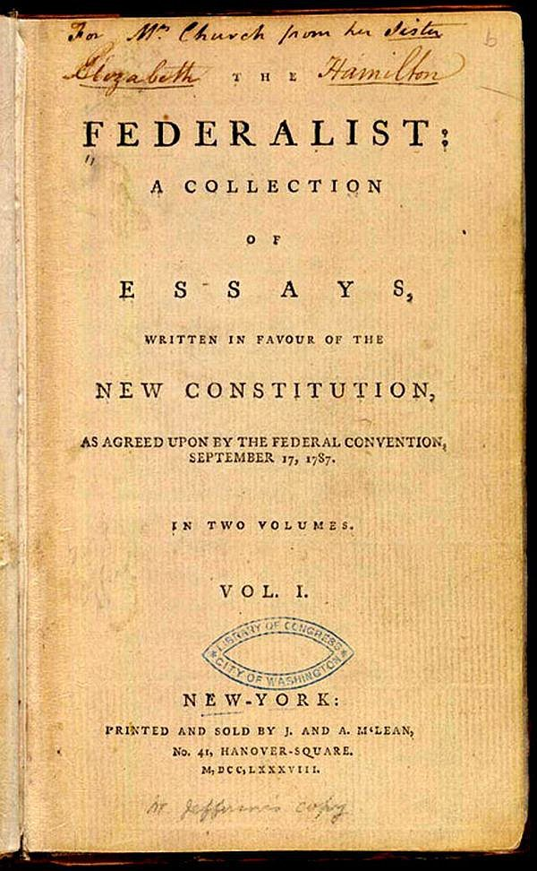
TEST QUESTION 83
The Federalist Papers supported the passage of the U.S. Constitution. Name one of the writers.
(James) Madison
(Alexander) Hamilton
(John) Jay
Publius
Publius = the fake name all three used.
TEST QUESTION 84
Why were the Federalist Papers important?
They helped people understand the (U.S.) Constitution.
They supported passing the (U.S.) Constitution.
Easiest: They supported the Constitution.
Wait, that’s real? 85 newspaper essays, all signed with one fake name. Like an anonymous account arguing online.
Quick check: 1776 or 1787?
Hold up 1 finger for 1776 (the breakup) or 2 fingers for 1787 (the new rulebook).
1
The Declaration of Independence is adopted
2
The Constitution is written
3
Jefferson writes “all men are created equal”
4
Washington runs the meeting in Philadelphia to write the new plan
5
Hamilton, Madison, and Jay start writing as “Publius”
1776 = Done with Britain · 1787 = Create a government
Founders file: Washington & Jefferson
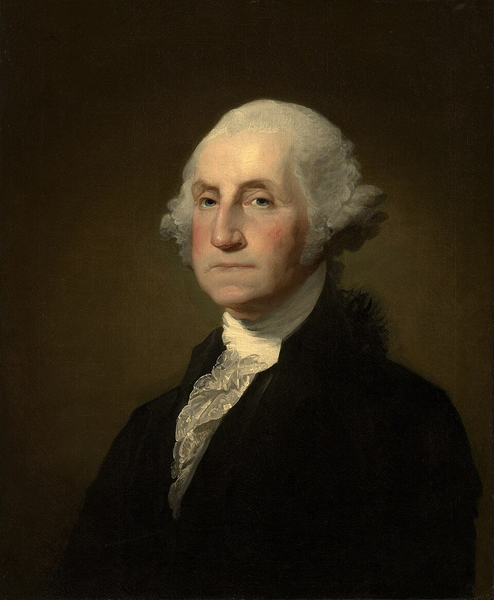
TEST QUESTION 86 ★
First president
All accepted answers: • “Father of Our Country” • First president of the United States • General of the Continental Army • President of the Constitutional Convention
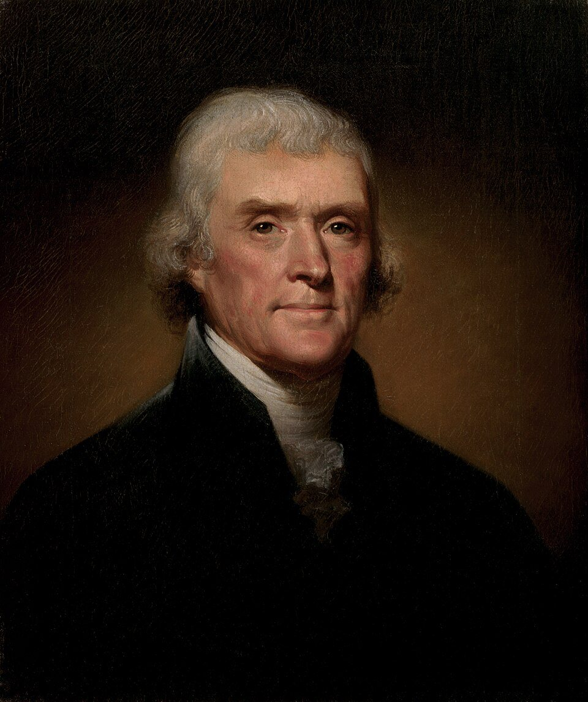
TEST QUESTION 87
Wrote the Declaration
All accepted answers: • Writer of the Declaration of Independence • Third president of the United States • Doubled the size of the United States (Louisiana Purchase) • First Secretary of State • Founded the University of Virginia • Writer of the Virginia Statute on Religious Freedom
Wait, that’s real? Washington could have stayed in power. He stepped down after two terms, and that set the example for every president after him.
Founders file: Franklin, Madison & Hamilton
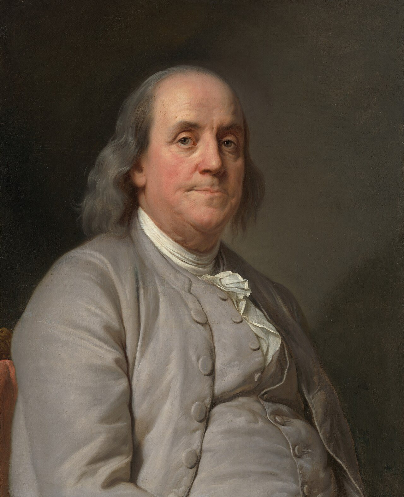
TEST QUESTION 85
Inventor
All accepted answers: • Founded the first free public libraries • First Postmaster General of the United States • Helped write the Declaration of Independence • Inventor • U.S. diplomat
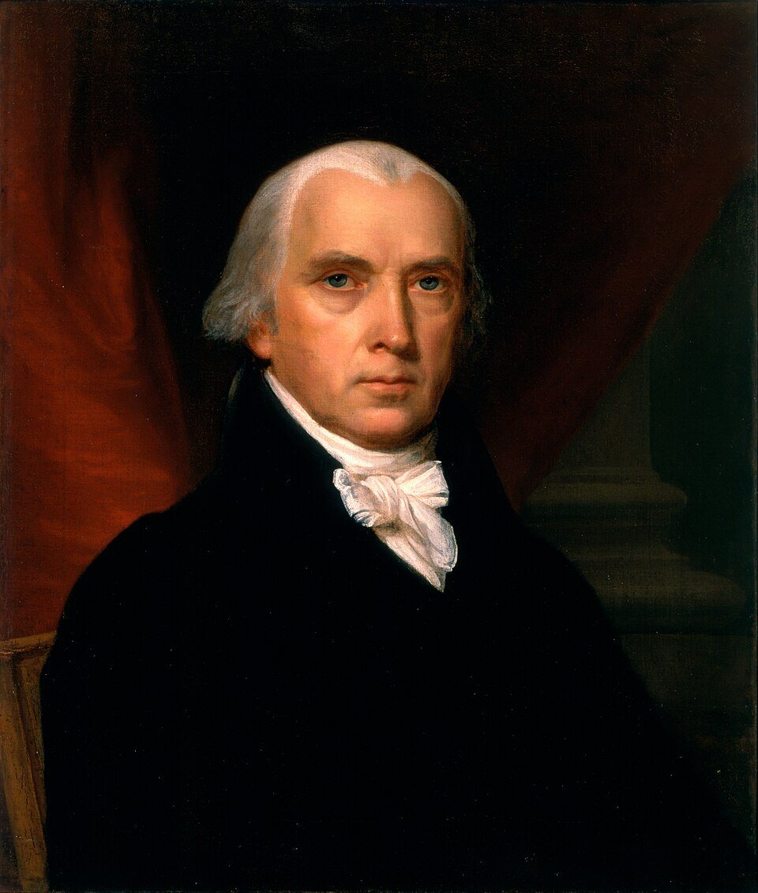
TEST QUESTION 88
Father of the Constitution
All accepted answers: • “Father of the Constitution” • Fourth president of the United States • President during the War of 1812 • One of the writers of the Federalist Papers
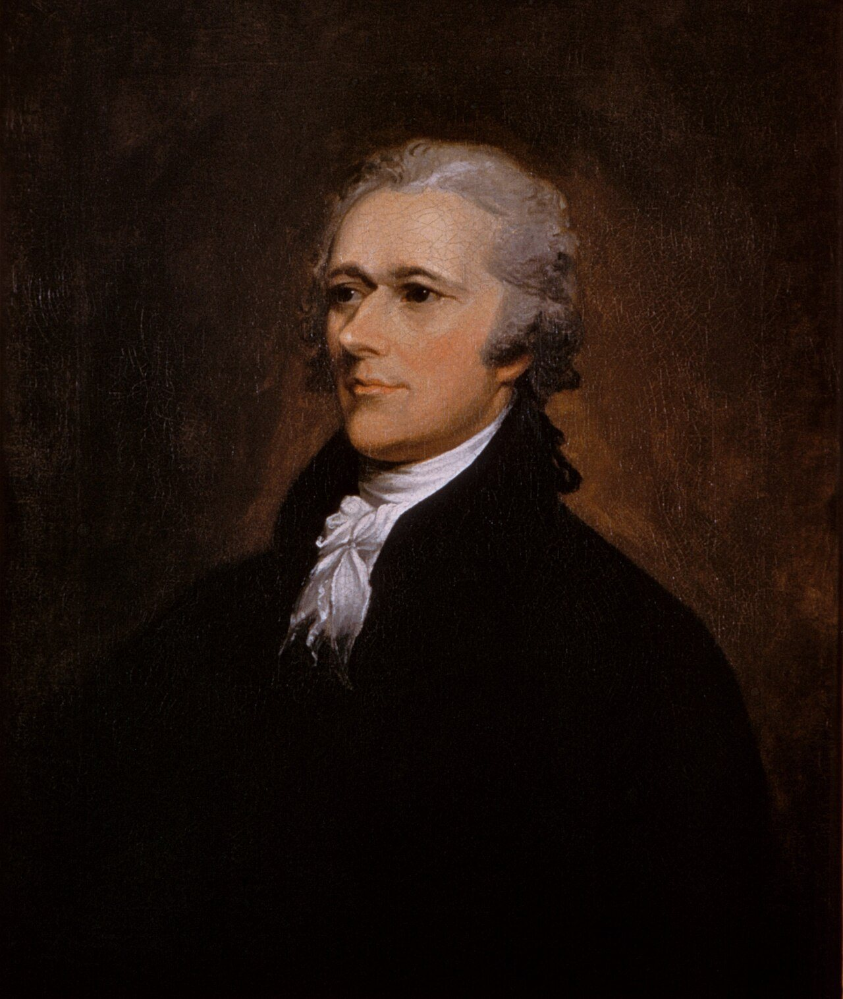
TEST QUESTION 89
Secretary of the Treasury
All accepted answers: • First Secretary of the Treasury • One of the writers of the Federalist Papers • Helped establish the First Bank of the United States • Aide to General George Washington • Member of the Continental Congress
Wait, that’s real? Hamilton was an immigrant from the Caribbean. Today he’s on the $10 bill.
Quick check: who am I?
Write the name on your whiteboard: Washington, Jefferson, Franklin, Madison, or Hamilton?
1
I led the Continental Army and became the first president.
2
I wrote the Declaration at 33. Later I doubled the size of the country.
3
I was an inventor, a diplomat in France, and the first Postmaster General.
4
They call me the Father of the Constitution. I was president during the War of 1812.
5
I was Washington’s aide and the first Secretary of the Treasury.
The 1776 Files · Iowa Civics Test, Friday 4
Key words in plain English
Word
What it means
Example
Persecution
Being punished or attacked for who you are or what you believe
Being jailed for your religion
Enslaved
Forced to work for no pay and treated as someone’s property
Africans sold in the colonies
Representation
Having someone you voted for in the room where rules are made
Iowa elects people to Congress
Quartering
Making people give soldiers a place to stay
Troops living in your house
Adopted
Officially approved
The Declaration, July 4, 1776
Diplomat
Someone who speaks for a country to other countries
Franklin in France
Secretary of the Treasury
The person in charge of the country’s money
Alexander Hamilton was first
The 1776 Files · Iowa Civics Test, Friday 4
Trap: the answer can look different
Q76: “What war did the Americans fight to win independence?” ANY of these is right:
VERSION A
American Revolution
VERSION B
The Revolutionary War
VERSION C
War for Independence
How to beat it
Learn the ★ questions first: Q74, Q78, and Q86.
One founder, many answers: Jefferson = wrote the Declaration AND third president.
Watch the year: 1776 = Declaration. 1787 = Constitution.
Wrong choices often come from the 1800s: the Civil War, Lincoln, Gettysburg.
The 1776 Files · Iowa Civics Test, Friday 4
GAME TIME · ABOUT 25 MINUTES
The 1776 Files
Open a case. Pick any of the 8 files on the Case Board.
Read the evidence. Each file starts with a short history note. The task uses it.
Solve the task. Sort true and false cards, put events in order, or match founders.
Answer the test question. Get it right to close the file. Wrong = try again.
All 8 files closed → the Final Vault: 9 more test questions. No skipping.
Done = type your name on the “ARCHIVE RESTORED” screen and tap Turn in. Finished early? Try the Evidence Lab.
Exit ticket
1
★ Who wrote the Declaration of Independence?
2
★ George Washington is famous for many things. Name one.
3
Why did the colonists declare independence from Britain? Give one reason and explain it in your own words.
The 1776 Files · Iowa Civics Test, Friday 4
Photo and video credits
Constitution (We the People): Constitutional Convention, via Wikimedia Commons (Public domain (U.S. government work))
Declaration of Independence: original: w:Second Continental Congress ; reproduction: William Stone, via Wikimedia Commons (Public domain)
Declaration of Independence painting (John Trumbull, 1819): John Trumbull (1756–1843), via Wikimedia Commons (Public domain)
Effigy Mounds National Monument, Iowa: Jokrasinski, via Wikimedia Commons (CC BY-SA 4.0)
Map of the thirteen colonies in 1774 (McConnell's historical maps): McConnell's historical maps of the United States, via Wikimedia Commons (Public domain)
Slave ship Brookes poster (1788): Plymouth Chapter of the Society for Effecting the Abolition of the Slave Trade, via Wikimedia Commons (Public domain)
Boston Tea Party (Nathaniel Currier, 1846): Nathaniel Currier, via Wikimedia Commons (Public domain)
Washington Crossing the Delaware (Emanuel Leutze, 1851): Emanuel Leutze (1816–1868), via Wikimedia Commons (Public domain)
The Federalist title page (1788): Publius (pseudonym) [ Alexander Hamilton , John Jay , James Madison ]., via Wikimedia Commons (Public domain)
George Washington (Gilbert Stuart): Gilbert Stuart (1755–1828), via Wikimedia Commons (Public domain)
Thomas Jefferson (Rembrandt Peale, 1800): Rembrandt Peale (1778–1860), via Wikimedia Commons (Public domain)
Benjamin Franklin (Joseph Duplessis): Joseph-Siffred Duplessis (1725–1802), via Wikimedia Commons (Public domain)
James Madison (John Vanderlyn): John Vanderlyn (–1852), via Wikimedia Commons (Public domain)
Alexander Hamilton (John Trumbull, 1806): John Trumbull (1756–1843), via Wikimedia Commons (Public domain)
Embarkation of the Pilgrims (Robert W. Weir, U.S. Capitol): Robert W. Weir (Architect of the Capitol photo), via Wikimedia Commons (Public domain)
Each Wikimedia Commons page lists the photographer and license.